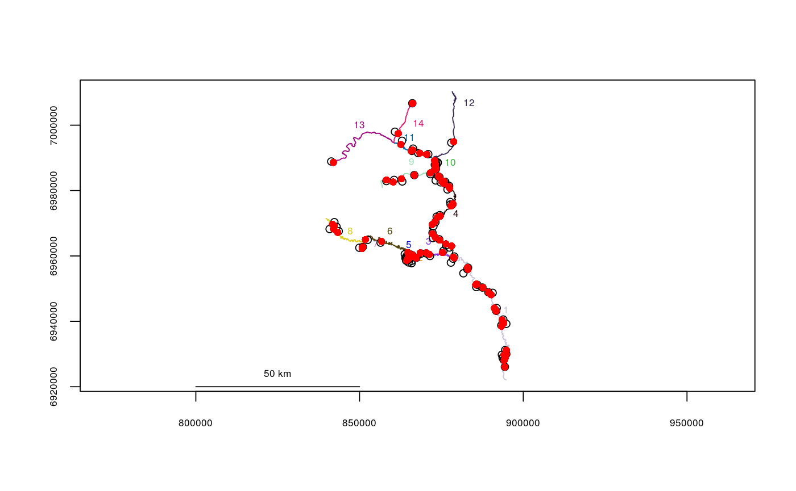

This function reads a point shapefile and determines the closest vertex in the river network to each point of XY data, returning a data frame with river locations, defined as segment numbers and vertex numbers, along with the data table read from the input shapefile.
pointshp2segvert(path = ".", layer, rivers)
| path | File path, default is the current working directory. |
|---|---|
| layer | Name of the shapefile, without the .shp extension. |
| rivers | The river network object to use. |
A data frame of river locations, with segment numbers in
$seg, vertex numbers in $vert, snapping distances in $snapdist, and the remaining columns
corresponding to the data table in the input point shapefile.
If the input shapefile is detected to be in a different projection than the river network, the input shapefile will be re-projected before conversion to river locations.
filepath <- system.file("extdata", package="riverdist") fakefish_UTM5 <- pointshp2segvert(path=filepath, layer="fakefish_UTM5", rivers=Gulk)#> OGR data source with driver: ESRI Shapefile #> Source: "/home/jose/R/scripts/riverdist/inst/extdata", layer: "fakefish_UTM5" #> with 100 features #> It has 5 fields #> Integer64 fields read as strings: fish_id flighthead(fakefish_UTM5)#> seg vert snapdist x y fish_id flight flight_dat #> 1 1 595 329.34419 885976.9 6951164 8 1 2015/04/01 #> 2 1 399 40.27721 891727.6 6943194 10 1 2015/04/01 #> 3 1 352 402.52259 893895.8 6940549 14 1 2015/04/01 #> 4 1 116 525.06623 893894.9 6929195 7 1 2015/04/01 #> 5 1 806 355.32753 878936.0 6959825 11 1 2015/04/01 #> 6 1 505 11.34949 889340.7 6948910 9 1 2015/04/01plot(x=Gulk)points(fakefish_UTM5$x, fakefish_UTM5$y)